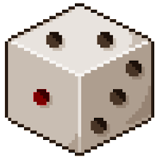

O jogo é inspirado no anime "Goblin Slayer",Criada por Kumo Kagyu e ilustrada por Noboru Kannatuki, onde o protagonista teve uma infância conturbada ao presenciar seu vilarejo ser invadido por goblins. Agora, apos sobreviver ao massacre que fizeram em seu vilarejo, ele vagou até uma cidade proxima, treinou e estudou enquanto caçava e massacrava brutalmente essas criaturas, sem dar chances para que se reproduzissem e salvando os civis de sua atual cidade e vilarejos próximos, se tornando conhecido como O MATADOR DE GOBLIS ...
"GoblinReaper" é um jogo de aventura e ação inspirado no universo sombrio de
Goblin
Slayer. Desenvolvido na engine Construct 3 e disponível
para
PC, o jogo mergulha os jogadores em um mundo repleto de monstros e principalmente o que
nosso personagem mais gosta de massacrar, GOBLINS!.
Os jogadores assumem o papel de um Aventureiro assustador e turbulento
GoblinReaper, embarcando em missões para recuperar e proteger os
inocentes
das investidas dos Goblins e para alimentar sua vontade de vingança e odio. Com uma
jogabilidade dinâmica e intensa, o jogo oferece combates estratégicos, exploração de
masmorras sombrias e resolução de enigmas intrigantes.
Utilizando o mouse o teclado, os jogadores mergulham em batalhas e confrontos
emocionantes
enquanto desvendam os segredos e mistérios do mundo do jogo. Prepare-se para fazer
massacre
brutais e tornar-se o lendário Goblin Reaper neste jogo de ação.
"GoblinReaper" é um jogo de aventura e ação inspirado no universo sombrio de Goblin Slayer. Desenvolvido na engine Construct 3 e disponível para PC, o jogo mergulha os jogadores em um mundo repleto de monstros e principalmente o que nosso personagem mais gosta de massacrar, GOBLINS!.
Os jogadores assumem o papel de um Aventureiro assustador e turbulento GoblinReaper, embarcando em missões para recuperar e proteger os inocentes das investidas dos Goblins e para alimentar sua vontade de vingança e odio. Com uma jogabilidade dinâmica e intensa, o jogo oferece combates estratégicos, exploração de masmorras sombrias e resolução de enigmas intrigantes.
Utilizando o mouse o teclado, os jogadores mergulham em batalhas e confrontos emocionantes enquanto desvendam os segredos e mistérios do mundo do jogo. Prepare-se para fazer massacre brutais e tornar-se o lendário Goblin Reaper neste jogo de ação.
PERSONAGENS

GoblinReaper
Aventulreiro com nome verdadeiro desconhecido, só sabemos que ele chegou aqui quando criança e ele odeia goblins, sempre o vejo voltando de uma missão com corpos recuperados em uma carroça e algumas sobreviventes ... (disee o mercador de frutas)
Goblins
Monstros julgados fracos pela guilda, porem, alguns de sua especie podem nacer com potencial genetico para ser tão inteligente como um humano ou tão forte quanto um gorila ... mas, a sua maioria e tão burro quanto uma porta ,por isso os inteligenties os lideram, deixando-os perigosos.
Civis
Camponeses, Cidadões e até mesmo aventulreiros geralmente mortos por emboscadas ou Goblins genaticamente mais fortes e Mulheres sequestradas para a reprodução dos Goblis ou como sacrificio para Rituais de suas crenças religiosas.
TRILHA SONORA
As trilhas tanto do jogo quando do site são originais da obra de Kumo Kagyu.Foram baixadas do Youtube do canal Haru Gaming aqui estão os links
ELEMENTOS
-

"Em meio à incerteza e perigo, um dado torna-se um símbolo de chance e destino. Para os aventureiros, jogar um dado pode representar a imprevisibilidade da vida e da morte, onde cada lançamento é uma decisão crucial que pode determinar o sucesso ou a tragédia. O resultado do dado pode influenciar o curso de uma batalha, a sobrevivência de um companheiro ou até mesmo o destino de uma missão. Em um mundo onde os perigos são abundantes e a morte espreita a cada esquina, o simples ato de lançar um dado pode encapsular toda a tensão e adrenalina da vida de um aventureiro e até dispertar o seus mais profundos sentimentos dependendo da situação que se encontra..."
REGRAS DO JOGO
NÂO MACHUQUE OS CIVIS, eles são o motivo que você mata Goblins!!
Caso queira se manter vivo, cuidado com as armadilhas e por onde anda, Goblins são burros, porem, espertos!
Mantenha seu HP alto assim correra menos riscos de GAMEOVER, eu disse "menos riscos" não "nulos", então tenha cuidado!!